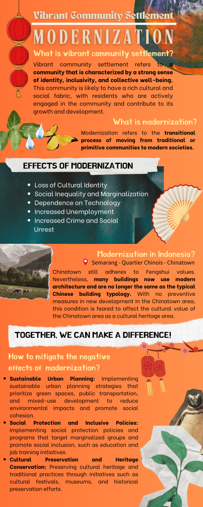

<div id="INFOGRAFIS">
<div class="infographic-container">
    <div class="infographic-image">
      
    </div>
    <div class="infographic-description">
      <h2>INFOGRAFIS</h2>
      <p>
        The infographic is designed and created with simplicity while maintaining its educational, striking clarity and engaging appearance. It outlines the transformation of modern community settlements, focusing on the global and local physical effects. Themes like Semarang Chinatown and Sam Poo Kong are presented for their significance.
      </p>
      <p>
        The predominant red color in the infographic is inspired by the hues of Semarang Chinatown, a Chinese tradition. This choice reflects vitality, joy, and happiness, while incorporating traditional Chinese color symbolism, red represents joy, energy, and festivity.
      </p>
    </div>
</div>
</div>
